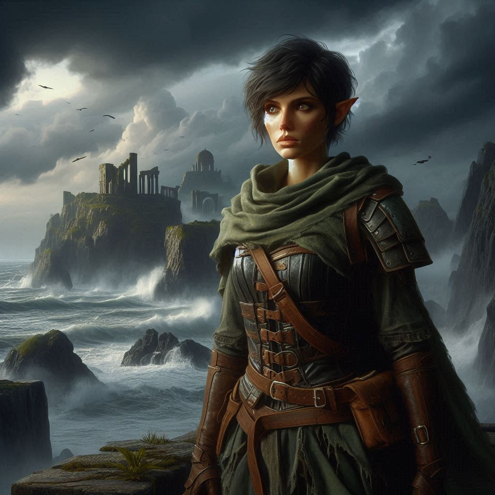

Passage to the Realm of Shadows
“This is it,” you mutter. “Onyx left us a way to follow him. A teleportation spell.”
Elias exhales sharply. “Are you sure it’s safe? Teleportation to the Shadow Realm is—”
“I don’t care about safe,” you cut him off, your voice firm. “We have to get to Onyx, and this is the only way.”
“I didn’t know you could read rune stones,” Elias says with a frown.
“A girl has her secrets,” you say without looking at him.
“And you’re sure this will work?”
“No, but the spell indicates ‘passage for two,’” you say with a shrug.
Without waiting for further objections, you gather your courage and begin reading the runes on the stone aloud. The incantation flows from your lips, the ancient words rolling off your tongue as if you’ve been speaking elvish your entire life. The rune stone in your hand pulses brighter, reacting to the magic, and suddenly, the air around you ripples. Elias grabs your hand just as the room shifts violently, colors warping and bending until the world around you dissolves into darkness.
When the world rights itself, you find yourself standing in a vast, crumbling temple, surrounded by cold stone walls and eerie silence. The Realm of Shadows. An unsettling chill creeps over your skin, the darkness here feeling alive, as if it’s watching you, waiting. The air is thick with foreboding, and you feel the weight of countless dark presences looming beyond your sight.
The ground is cracked, and as you look closer, you see it—written in blood on the floor: Umbra’Thal.
“Umbra’Thal,” Elias whispers beside you. “The capital of the dark elves? What does it mean?”
“It’s a message,” you say, your voice low. “A place. Someone is leading us there.”
A sound—a soft, scraping noise—echoes through the temple. You draw your sword instinctively, your pulse quickening. Elias stands ready, his bow drawn, eyes scanning the shadows. From the darkness, a small, hunched figure emerges—a goblin, its eyes gleaming with cunning.
“Travelers, lost in the dark,” the goblin says with a toothy grin. “How rare, how rare indeed. What brings you to the realm of shadows, hmm?”
You tighten your grip on your blade. “We’re looking for someone. A dwarf named Onyx.”
The goblin chuckles, the sound raspy and unsettling. “Onyx, Onyx. Names mean little here, girl. But Umbra’Thal… yes, yes, I know this place. The dark elves know all who enter their domain.”
“And you’re going to take us there,” Elias interjects, stepping forward.
The goblin’s eyes narrow, assessing. “For a price,” he hisses. “The Shadow Realm is no place for favors.”
You glance at Elias, then back to the goblin. “What’s the price?”
The goblin tilts his head, his crooked smile widening. “The stone you carry. The rune. It holds power. Give it to me, and I will guide you safely to Umbra’Thal.”
The rune stone hums faintly in your hand, a warning of its importance. Giving it up feels wrong, but you have no other leads. The decision gnaws at you, but time is running short, and every second wasted brings Onyx closer to danger.
“What do we call you, goblin?” you ask. “In a place where names have no meaning.”
He smiles again. “You may call me Shamurel, elvish for one whose people are lost.”